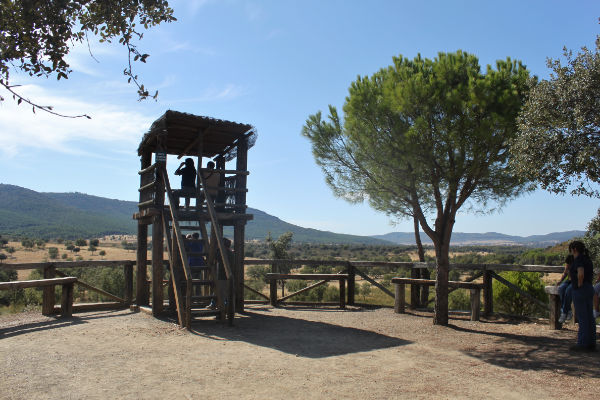
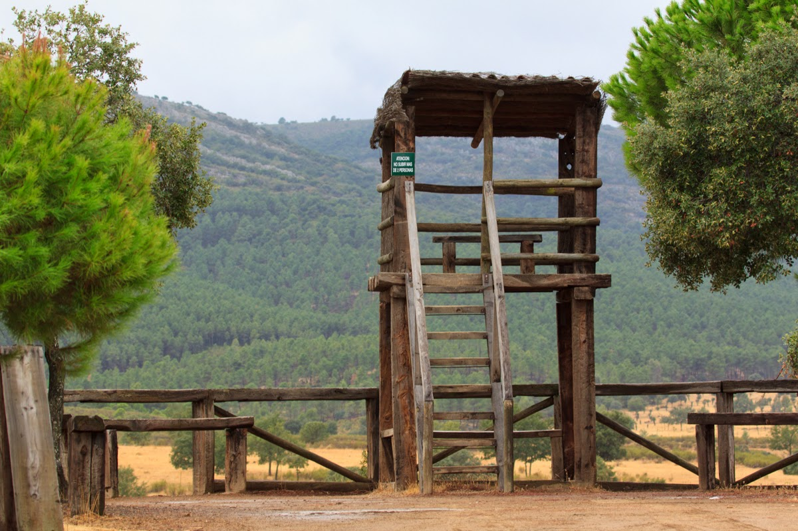
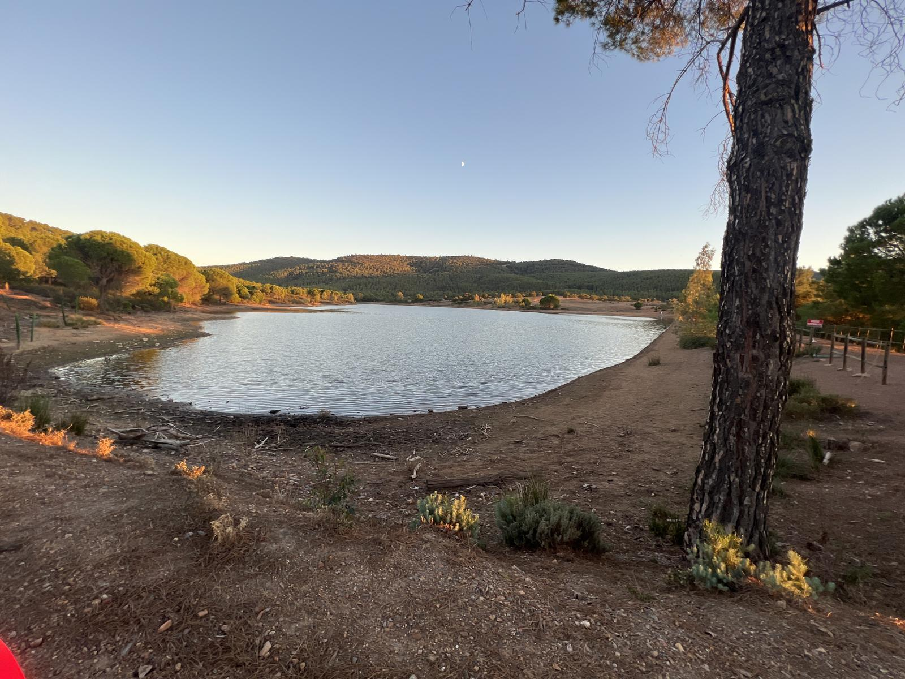
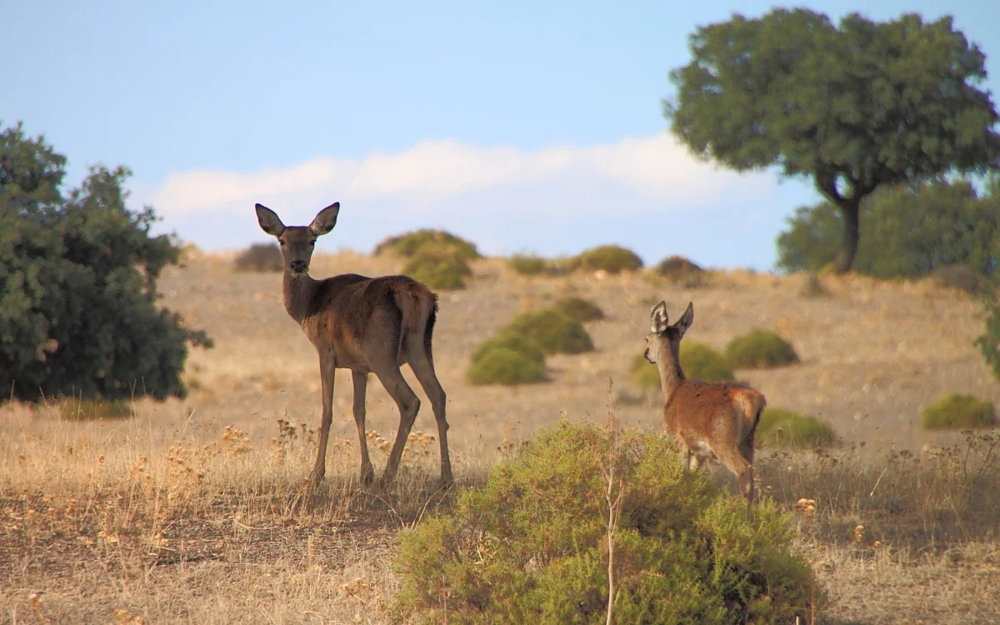
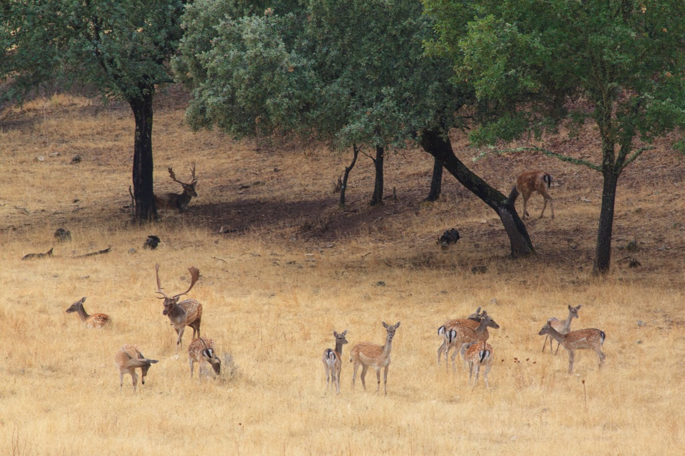
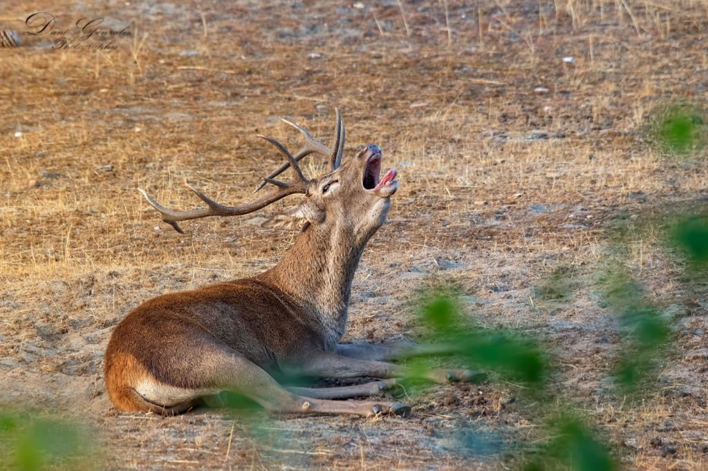

Observatorio de la Berrea
Un lugar privilegiado para observar la fauna salvaje.
El Mirador de la Berrea se encuentra en el Monte Valdemoros, dentro de la Reserva Regional de Caza de Cíjara, en la Reserva de la Biosfera de La Siberia. Este espacio natural es uno de los más importantes de Extremadura y ofrece una experiencia única: contemplar y escuchar la berrea del ciervo rojo y la ronca del gamo en su hábitat natural.
Ubicación y accesos
El mirador está estratégicamente ubicado para observar los bosques mediterráneos, dehesas y embalses que caracterizan la zona.- Cómo llegar:
- Desde Herrera del Duque, tomar la carretera hacia Fuenlabrada de los Montes y desviarse por pista forestal hacia Monte Valdemoros.
- Desde Villarta de los Montes, tomar la pista hacia Helechosa de los Montes y seguir hasta Valdemoros.
El mirador forma parte de la Ruta de la Reserva de Cíjara, un recorrido de 42 km que incluye otros puntos de interés, como el mirador Portillo del Cíjara, con vistas al embalse de García de Sola y a la fauna del entorno.
Qué es la berrea
La berrea es el ritual de celo del ciervo rojo, durante el cual los machos emiten bramidos potentes para atraer a las hembras y marcar su territorio. Durante este periodo se pueden observar combates entre machos por el liderazgo.En paralelo, la ronca del gamo, un sonido más grave y gutural, puede escucharse durante el mismo periodo, añadiendo otra capa al espectáculo natural.
Fechas y horarios de observación
La berrea alcanza su máxima actividad entre mediados de septiembre y mediados de octubre, aunque la actividad exacta puede variar según las condiciones climáticas de cada año.- Máxima actividad: primeras semanas de la temporada.
- Horarios recomendados: al amanecer y al atardecer, cuando los animales están más activos.
La ronca del gamo suele comenzar un poco más tarde y puede prolongarse durante todo el mes de octubre.
Fauna y flora
El mirador ofrece la oportunidad de observar una fauna diversa y representativa de La Siberia:- Fauna:
- Ciervos, corzos, jabalíes y gamos
- Águila real, buitre negro, cigüeña negra
- Flora:
- Encinas y alcornoques
- Matorral mediterráneo
- Vegetación de ribera
Este equilibrio de fauna y flora convierte al mirador en un lugar privilegiado para el ecoturismo y la observación de animales en libertad.
El cielo nocturno
La Siberia cuenta con más del 80% de su territorio con cielos libres de contaminación lumínica, lo que le ha otorgado la condición de Destino Starlight.Desde el mirador, la observación de estrellas se convierte en una experiencia única, especialmente en noches despejadas durante la temporada de berrea.
Consejos para visitantes
Una experiencia para sentir
El Mirador de la Berrea no es solo un punto de observación; es un lugar para escuchar, sentir y conectar con la naturaleza en estado puro. Cada bramido del ciervo y cada ronca del gamo forman parte de un espectáculo natural que se repite cada otoño gracias a la conservación del territorio.Visitar el Mirador de la Berrea es adentrarse en un espacio donde la naturaleza sigue intacta, la vida silvestre marca su propio ritmo y la experiencia de otoño se convierte en un recuerdo inolvidable.
Galería de fotos





